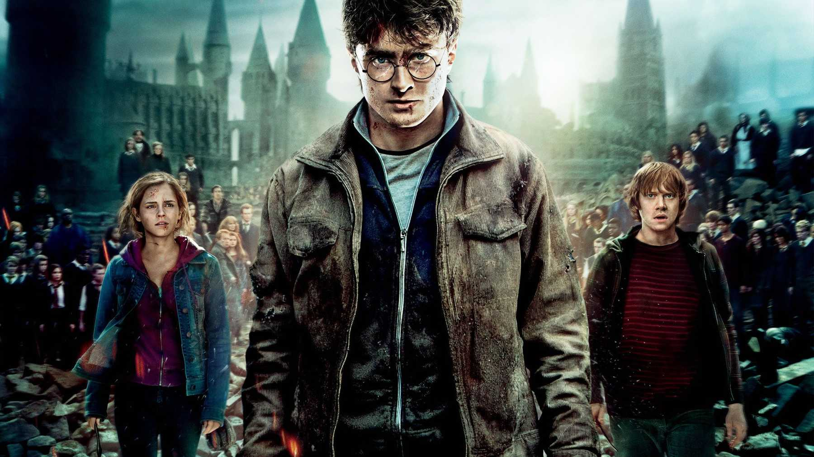

Our Favourite Movies
Our three favourite Movies
Here are our three favourite Movies!
Lord of the Rings: Return of the King
 Jackson has kept the momentum of the series rolling on and on though the
traditionally 'difficult' middle part and 'weak' finale, delivering a climax to the story that's neater and more
affecting than what Tolkien managed on the printed page. Some viewers might feel that the director sprinkles some
cheese on his extended coda, adding at least one false ending too many (even if he does ignore the book's Scouring
of The Shire). But those who have walked beside these heroes every step of the way on such a long journey deserve
the emotional pay-off as well as the action peaks, and they will be genuinely touched as the final credits roll.
Yes, the Ring is dead. Long live King Kong.
Jackson has kept the momentum of the series rolling on and on though the
traditionally 'difficult' middle part and 'weak' finale, delivering a climax to the story that's neater and more
affecting than what Tolkien managed on the printed page. Some viewers might feel that the director sprinkles some
cheese on his extended coda, adding at least one false ending too many (even if he does ignore the book's Scouring
of The Shire). But those who have walked beside these heroes every step of the way on such a long journey deserve
the emotional pay-off as well as the action peaks, and they will be genuinely touched as the final credits roll.
Yes, the Ring is dead. Long live King Kong.
Harry Potter and the Deathly Hallows Part 2
"It all ends," says the poster slogan. A potentially grim statement of the obvious, of course, yet the Potter saga could hardly have ended on a better note. With one miraculous flourish of its wand, the franchise has restored the essential magic to the Potter legend – which had been starting to sag and drift in recent movies – zapping us all with a cracking final chapter. It's dramatically satisfying, spectacular and terrifically exciting, easily justifying the decision to split the last book into two.
Star Wars: Return of the Jedi
 With this last of the central “Star Wars” cycle, there is the sense of the
closing of a circle, of leaving behind real friends. It is accomplished with a weight and a new maturity that seem
entirely fitting, yet the movie has lost none of its sense of fun; it bursts with new inventiveness. With “Jedi,”
George Lucas may have pulled off the first triple crown of motion pictures. It is a very deep and compelling movie,
with a satisfying plot and ending, not to mention a stunning soundtrack.
With this last of the central “Star Wars” cycle, there is the sense of the
closing of a circle, of leaving behind real friends. It is accomplished with a weight and a new maturity that seem
entirely fitting, yet the movie has lost none of its sense of fun; it bursts with new inventiveness. With “Jedi,”
George Lucas may have pulled off the first triple crown of motion pictures. It is a very deep and compelling movie,
with a satisfying plot and ending, not to mention a stunning soundtrack.